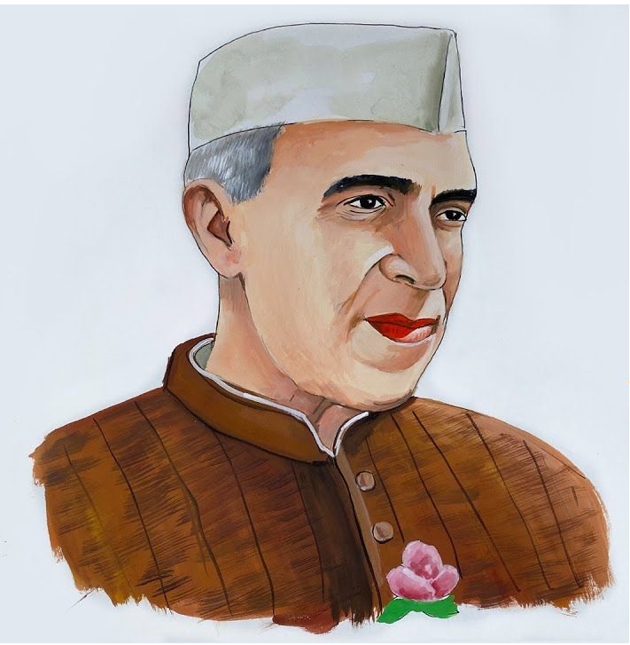

Pandit Jawaharlal Nehru was the first Prime Minister of Independent India.
He was an "Indian anti-colonial nationalist", "Secular humanist", "Social democrat" and "Author" who was a central figure in India during the middle of the 20th century. Nehru was a principal leader of the Indian Nationalist Movement in the 1930s and 1940s.
Upon India's independence in 1947, he served as the country's Prime minister for 16 years as a longest serving Prime minister of Republic India. Nehru promoted "Parliamentary Democracy", "Secularism", and "Science and Technology" during the 1950s, powerfully influencing India's arc as a modern nation in International affairs by building premiere institutions such as IITs & AIIMS in the field of Science & Thechnology. A well-regarded author, his books written in prison, such as Letters from a Father to His Daughter (1929), An Autobiography (1936) and The Discovery of India (1946), have been read around the world.
The son of Motilal Nehru, a Prominent lawyer and Indian nationalist, Jawaharlal Nehru was educated in England at Harrow School and graduation from Trinity College & Cambridge University, and trained in the law at the Inner Temple. He became a Barrister, returned to India and enrolled at the Allahabad High Court and gradually began to take an interest in national politics, which eventually became a full-time occupation. He joined the Indian National Congress, rose to become the leader of a progressive faction during the 1920s.
As Congress president in 1929, Nehru called for complete independence from the British Raj.
Upon India's independence on 15 August 1947, Nehru gave a critically acclaimed speech, "Tryst with Destiny"; he was sworn in as the Dominion of India's Prime minister and raised the Indian flag at the Red Fort in Delhi
read more.
